Утром в отеле нас накормили завтраком состоявшим из омлета, булочек и ароматного зеленого чая. Движение мы начали около 7 утра. На улице уже достаточно жаркою. Мы не поехали в старую часть Сринагара, которая расположена на противоположной стороне озера, а проехали по восточному берегу и сразу начали плавный подъем в горы. Вообще въезд в горы очень незаметный, а первые скалы со снегом наверху - за несколько километров до Сонамарга (Sonamarg).
Населенка длится очень долго, километров 50-60 по долине вверх. Встречаются городки и одиноко стоящие дома. Воду покупаем в ларьках, 2 раза ели в кафе.
Перед Сонамаргом начинается так называемая зона без полиэтилена. И в самом деле, очень чисто, никаких пакетов вдоль дорог или в магазинах.
От Сринагара в горы сначала плавный подъем, затем уклон увеличивается.
Появляются первые чистые горные ручьи и, кончено, военные базы с вертолетными площадками и летними подготовительными лагерями. Заночевали на выполаживании, около одного из таких лагерей.
Вечером всех немного шатает от горняшки. Высота стоянки 2800 м. Вечером очень тепло, ходим без футболок.
трек
Computer (Length/Duration/Average Speed): 103.7/6.28/16
GPS (Length/Vertical Up/Vertical Down): 98.2/2076/808
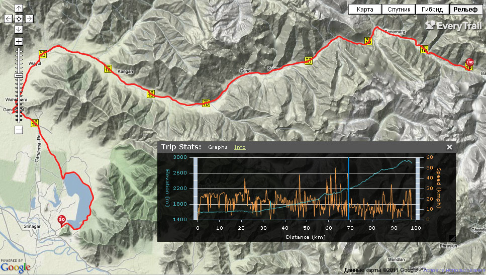
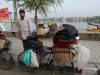 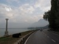 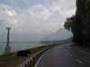 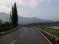 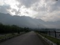 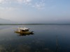 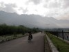 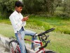 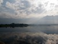 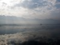 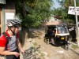 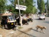 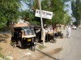 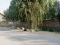 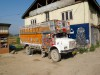 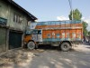 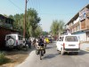 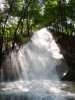 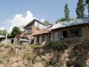 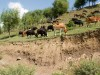 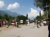 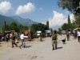  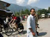 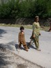 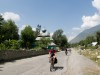 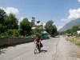 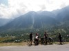 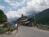
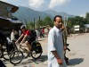 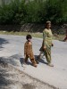 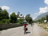 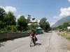 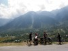 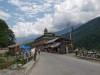  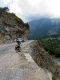 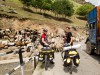 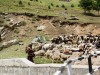
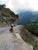 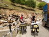 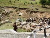  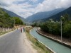 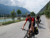 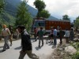 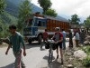 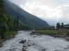 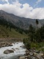 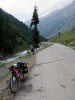 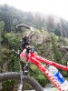 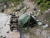 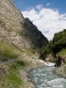 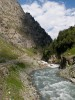 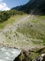 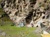 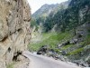 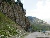 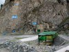 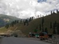 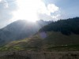
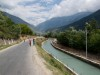 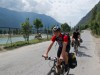 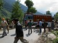 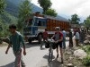 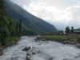 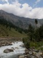 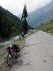 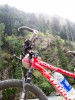 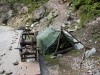 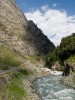 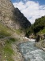 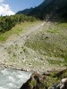 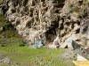 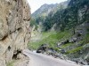 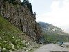 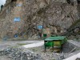 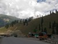 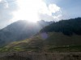